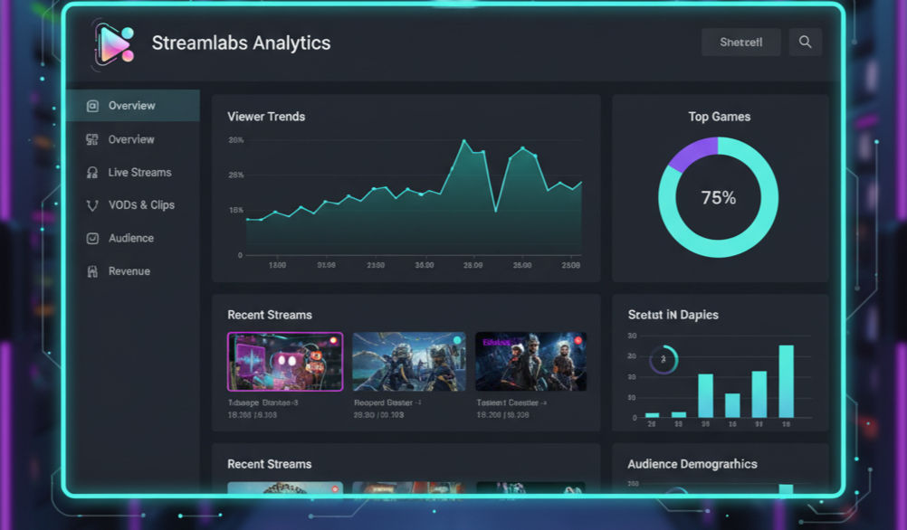

Streamlab Analytics
Introducing StreamLab Analytic, the top-tier software designed to provide real-time analytics and marketing insights. Whether you're a seasoned streamer or just starting out, this tool seamlessly integrates with OBS and a wide range of devices around the globe. Elevate your streaming experience and gain valuable insights to enhance your content strategy.
Real-time insights